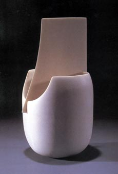

| Ruth
Duckworth
Deutsch-Amerikanische Keramikerin
Ruth
Duckworth (geb. 1919) ist eine Keramikerin mit einer ästhetischen
Sprache, wie keine andere. Sie schafft ruhige, weiche Porzellanobjekte,
die an Knochen erinnern, wobei Form, Material und Ausdruck eins
werden.
Duckworth ist von ihrer Deutschen Heimat in Jahr 1936 nach Großbritannien
geflüchtet, wo sie Skulptur studierte. Im Jahr 1964, zog sie
in die USA, wo sie erfolgreich mit Ton arbeitet. Auch wenn Duckworth
an einigen großen architectonischen Aufträgen gearbeitet
hat, so ist sie doch hauptsächlich für ihre kleineren,
klar erkennbaren Porzellanarbeiten bekannt. Ihre Arbeit reflektiert
einige der Europischen Sensibilitäten anderer ausgewanderter
Mitteleuroper, wie z.B. von Hans Coper
oder Lucie Rie.
"Duckworth schafft es die Essenz der morphologischen Erfahrung
und Gefühls in diesen unscheinbaren abstracten Skulpturen einzufangen."
(Peter Lane, Contemporary
Porcelain, Craftsman House, 1995)
Mehr Artikel
Mehr Kummen der Woche
|